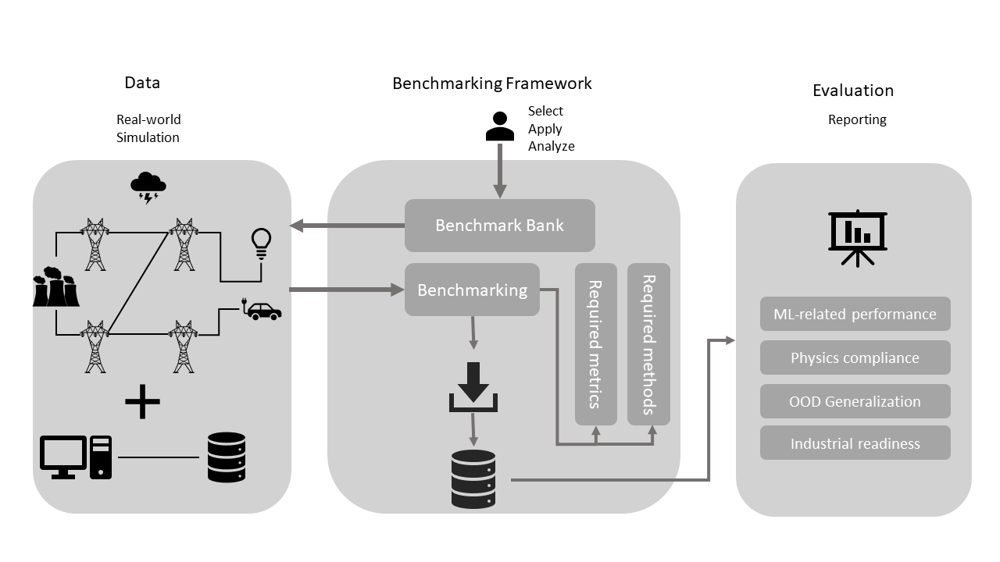
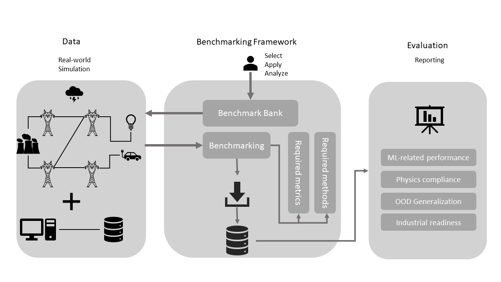

Welcome to LIPS’s documentation!
This platform serves as guide for Learning Industrial Physical Simulation (LIPS) platform users. All the requirements and functionalities are explained in this documentation.
GETTING STARTED
This platform serves as guide for Learning Industrial Physical Simulation (LIPS) platform users. All the requirements and functionalities are explained in this documentation.
GETTING STARTED